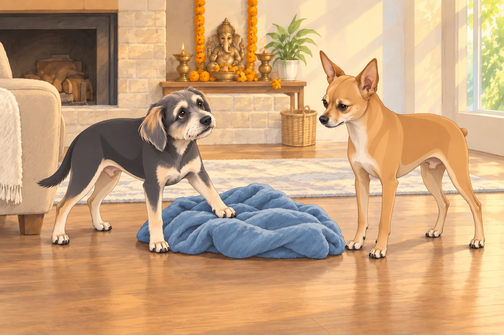
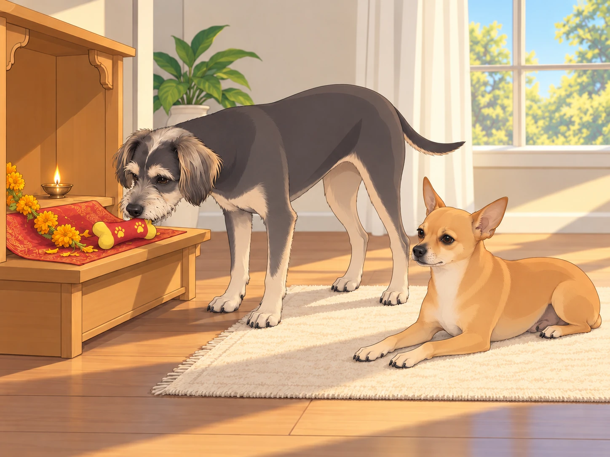

The days of Ganesh Chaturthi passed in a rhythm the dogs had begun to know. Morning aartis, evening lamps, Buddy’s squeaky-bone offerings, Neet’s military “quality control” — the Patel household had lived in glow and laughter.
But every arrival has a farewell, and today was Visarjan Day.
Heather woke early, tying her hair back, her face set with quiet determination. Sagar brewed chai with extra cardamom, his calm masking the tug of goodbye.
The generals, however, were in full crisis mode.
Morning Security Briefing
Neet paced the living room like a field marshal. “Today we escort the VIP out. Maximum vigilance. Minimal sloppiness. No unauthorized squirrels.”
Buddy nosed his blanket toward the shrine. “But… but I don’t want him to goooo. Can’t we just… hide him? In the closet? Under my blanket?!”
Neet glared. “Ridiculous. He’s the Lord of Obstacles. He’d find his way out of your blanket in two seconds.”
Buddy put one paw on the blanket. “Then can’t we adopt him? Like permanent roommate?”

“He already has somewhere to live.”
“So did you. You still sleep on my pillow.”
Neet resumed pacing, taking a slightly wider route around the blanket.
He sighed. “This is the way. Duty fulfilled. Mission complete. Then he departs.”
Buddy whimpered. “You’re too calm about this. I’m devastated.”
Neet glanced at him, softer now. “I’ll miss him too.”
The Preparations
Heather prepared the farewell plate: coconuts, turmeric, flowers, and modaks. She draped the murti with a fresh garland. The air shimmered with incense.
Buddy circled the plate, whispering, “If he doesn’t finish these modaks, I volunteer as tribute.”
“Not approved,” Neet snapped.
Buddy sat down beside the plate.
“I can wait for a vacancy.”
Heather moved the plate onto the table. Buddy watched it rise, taking his prospects with it.
Sagar lifted the idol carefully, holding it with reverence. Heather carried the plate of offerings. Together they moved toward the door, the dogs padding alongside like royal guards. Neet reached it first and planted himself squarely in the opening.
“Escort,” Sagar murmured. “You have to let us out.”
Neet stepped aside with the air of a dog granting special permission.
At the threshold, Heather whispered: “Ganpati Bappa Morya.”
Neet barked solemnly once. Buddy tried to howl but his voice cracked into a squeaky hiccup.
The Royal Escort
The car ride was unlike any other. Sagar drove carefully, Heather beside him steadying Ganpati amid the flowers.
Neet sat upright in the back, eyes scanning the horizon like a Secret Service agent. “Perimeter clear. All safe.”
Buddy leaned toward Heather’s lap, where she steadied the idol. “Are you comfortable, Bappa? Do you need water? Snacks? A blanket?”
Neet checked Buddy’s blanket, then looked back out the window. “He has everything.”
Buddy tucked the loose corner in. A moment later he untucked it.
“What now?”
“What if he’s too warm?”
Neet turned from the window and helped flatten the corner.
Buddy whispered: “He’s leaving forever. I have to make sure he’s cozy.”
From the idol came the faintest twinkle in the sunlight, as if Ganesha was smiling at both of them.
At the Water’s Edge
They reached the lake where families had gathered for immersion. Drums echoed, chants of “Ganpati Bappa Morya!” filled the air, children ran with sparklers.
The Patel family stepped forward. Sagar and Heather carried the idol together. The dogs walked at their sides — Neet stiff with solemnity, Buddy wagging furiously at every drumbeat.
At the water’s edge, Heather’s eyes shimmered. “Every year I feel the same… I don’t want to let go.”
Sagar squeezed her hand. “But letting go is part of the prayer.”
Neet watched silently. Buddy whimpered. “This part’s the worst.”
Heather and Sagar lowered the idol gently into the water, flowers bobbing around it, the sunlight catching on the colors.
Together they said: “Ganpati Bappa Morya. Pudhchya Varshi Lavkar Ya.”
The Canine Farewell
As the murti drifted, the dogs sat at the shoreline.
Neet, voice steady: “Mission complete. VIP escorted successfully.”
Buddy, tears in his eyes: “Best guest ever.”
And then — a breeze swept across the lake, scattering marigold petals into the air. The petals swirled above the dogs before drifting onto the water.
Buddy gasped. “He said goodbye to us!”
Neet blinked, his composure flickering. “Approved. Deeply approved.”
Evening Benediction
Back home, the shrine was empty, the marigold garlands wilting. But the house didn’t feel empty. It felt… full, as though Ganesha had left his laughter in the walls, his peace in the air.
Heather lit one small diya. “Even if he’s gone, he’s here.”
Sagar nodded. “Always.”
Neet curled up in his usual sunbeam, Buddy dropped his squeaky toy in the shrine.

Buddy left the toy there and settled beside Neet. Neither of them moved it when the house grew quiet.